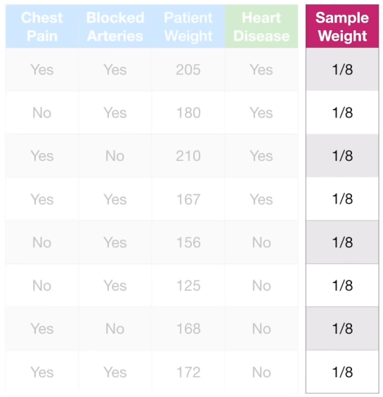
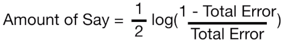
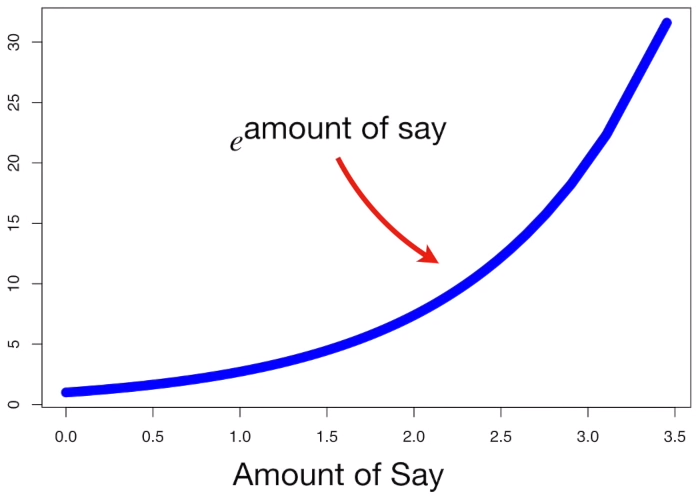
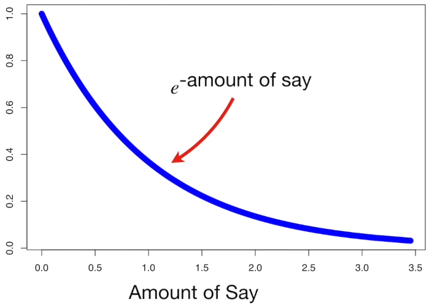
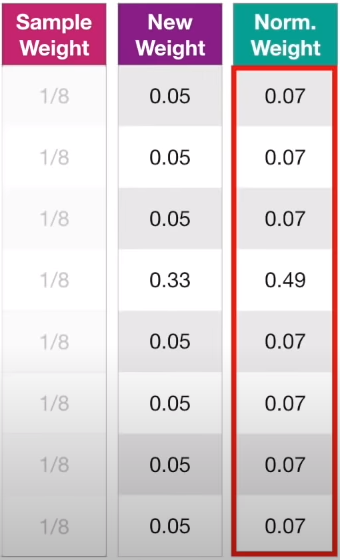

Tree-Based Models
Decision Trees
The algorithm iteratively goes through each feature and finds the best split for each depth based on a splitting criterion.
Classifier Trees
- Splitting criterion
-
Gini Impurity
For J classes where a i ∈ {1, ..., J}: -
Entropy (Information Gain)
-
Categorical feature splits This can be done in 1 of 2 ways:
- One-hot encoding: Every level has its own binary column. For a level
x, a node will be split into child nodes of columnx= 1 or 0. - Ordinal encoding: There will be a single numerical column of integers representing the different levels. Considering how the input data matrix would not be sparse as with one-hot encoding, this may be computationally more efficient with the caveat that computing 1's and 0's are easier. Refer to how numeric splits work below.
- Numeric feature splits:
- Numeric column is first sorted from smallest to largest.
- Average is computed between each successive row.
-
Each average is used to split the node and compute the split criterion metric.
-
The average with the best split criterion metric is chosen.
Regression Trees
-
Splitting criterion: Sum of squared errors (SSR)
-
Numeric feature splits:
- Iterate through each sample and use the average between the current and next sample as a threshold to split the dataset into 2 groups.
- Compute the combined SSR for both groups during each iteration.
-
The average that results in the best split (lowest SSR) will be used to split the node.
-
Categorical feature splits: Similar method to numeric feature splits is employed except that instead of the average between each sample being iteratively used as a threshold to split the dataset for SSR computation, the split used for SSR computation is based on whether samples have a categorical value or not.
Pruning
- Pre-pruning
- Post-pruning
Random Forests
AdaBoost
The core principle of AdaBoost is to fit a sequence of weak learners on repeatedly modified versions of the data. The data modifications at each so-called boosting iteration consist of applying weights to each of the training samples. Training examples that were incorrectly predicted by the boosted model induced at the previous step have their weights increased, whereas the weights are decreased for those that were predicted correctly. As iterations proceed, examples that are difficult to predict receive ever-increasing influence. Each subsequent weak learner is thereby forced to concentrate on the examples that are missed by the previous ones in the sequence. The key steps have been documented below:
- Initialise a sample weights column which indicates how important it is for a sample to be correctly classified. This is done by taking
1/mwhere m is the number of samples in the dataset - total weights should sum to 1.

- Build a stump with a relevant split criterion - Gini / Entropy for classification; SSR for regression.
- The stump only has 1 root node that splits into 2 leaves immediately.
- This is done using the feature that gives the best split criterion value.
- Compute
amount of say(output weight) for the stump usingtotal error[0,1], which is the sum of weights of the incorrectly classified samples:


-
If stump total error is high,
amount of sayis negative - will reverse its output. -
Update weight samples such that incorrectly classified samples have greater weight values.

- Update weight samples such that correctly classified samples have smaller weight values.

- Normalise the updated weights so they sum to 1.

- Create the next stump either by:
- Using the normalised weights to compute the weighted split criterion per feature.
-
Using the normalised weights as a distribution to draw samples from the original dataset.
- As incorrectly classified samples have large weights, they take up a larger range in the distribution and have a higher chance of being sampled.
- Sample until you get the same amount of rows as the original dataset.
- Lastly, reinitialise the sample weights as
1/m. The incorrectly classified samples need not retain their higher weight values as they should have been repeatedly sampled into duplicate rows.
-
Prediction:
- Classification: The class predicted by the stumps with the highest sum of
amount of saywill be the final prediction - Regression: The predictions from all stumps are then combined through a weighted sum to produce the final prediction (sklearn).
Gradient Boost
XGBoost
Summary
| Algo | Learner | Bootstrap | Learner Weights | Ensemble Method |
|---|---|---|---|---|
| Random Forest | Full trees | True | Equal | Bagging |
| AdaBoost | Stumps | False | Weighted | Boosting |